Chapter 9 · Part 1 — The Amazing Ride
The Pteranodon coasted down to the ground.
He stared at Jack with his bright, alert eyes.
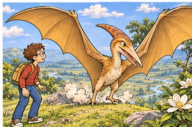
What was Jack supposed to do? Climb on? “But I’m too heavy,” thought Jack.
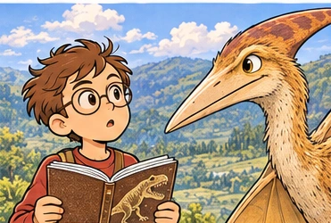
Don’t think. Just do it.
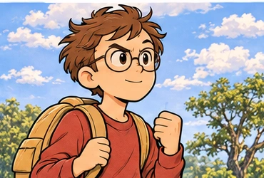
Jack looked at the Tyrannosaurus.
He was starting up the hill. His giant teeth were flashing in the sunlight.
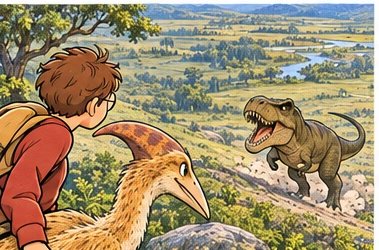
Okay. Don’t think. Just do it!
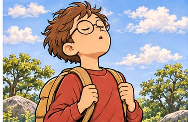
Jack put his book in his pack. Then he eased down onto the Pteranodon’s back.
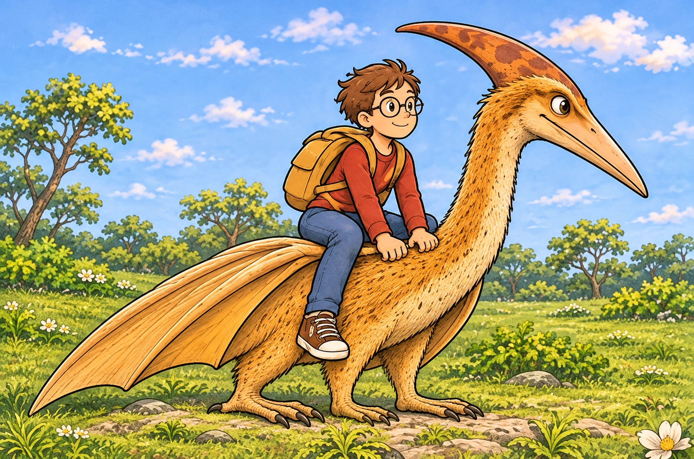
He held on tightly.
The creature moved forward. He spread out his wings—and lifted off the ground!
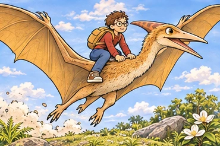
They this way. Then that.
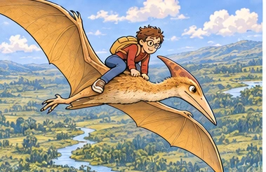
Jack nearly fell off.
The Pteranodon himself, then rose into the sky.
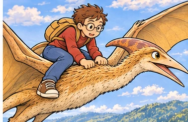
Jack looked down. The Tyrannosaurus was chomping the air and staring up at him.
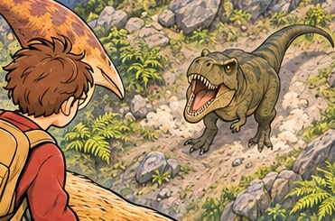
The Pteranodon glided away.
He sailed over the hilltop.
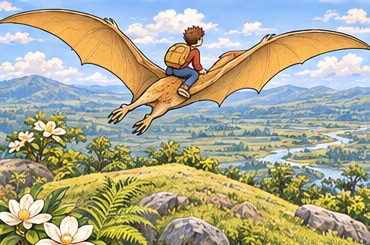
He circled over the valley. Over all the filled with babies. Over all the giant duck-billed dinosaurs.
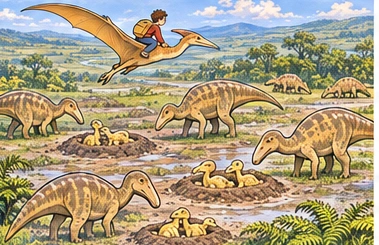
Then the Pteranodon soared out over the plain—over the Triceratops who was in the high grass.
It was amazing! It was a !
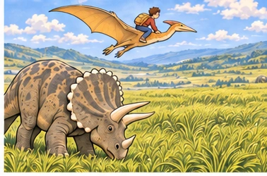
Jack felt like a bird. As light as a feather.
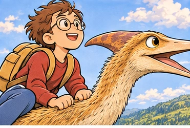
The wind was rushing through his hair. The air smelled sweet and fresh.
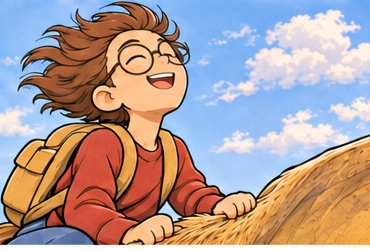
He whooped. He laughed.
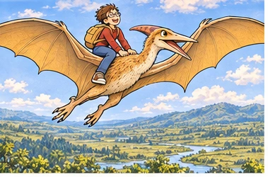
Jack couldn’t believe it. He was riding on the back of an flying reptile!
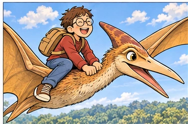
The Pteranodon sailed over the stream, over the ferns and bushes.
Then he carried Jack down to the base of the oak tree.
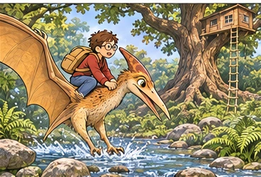
When they came to a stop, Jack slid off the creature’s back. And landed on the ground.
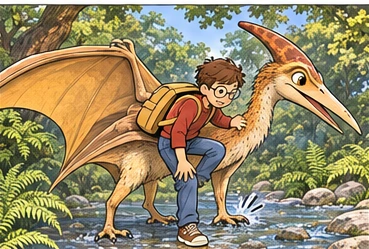
Then the Pteranodon took off again and glided into the sky.
“Bye, Henry,” whispered Jack.
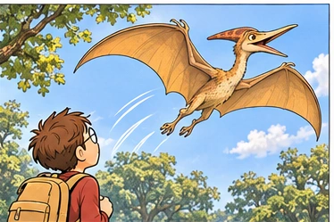
“Are you okay?” Annie shouted from the tree house.
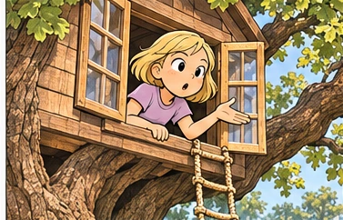
Jack pushed his glasses into place. He kept staring up at the Pteranodon.
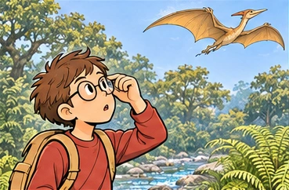
“Jack, are you okay?” Annie called.
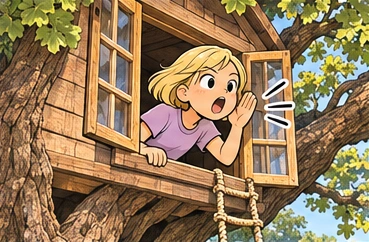
Jack looked up at Annie. He smiled.
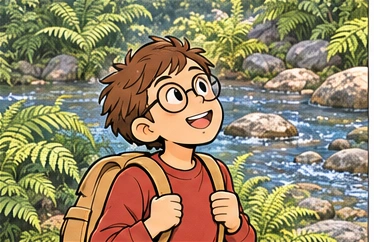
“Thanks for saving my life,” he said. “That was really fun.”
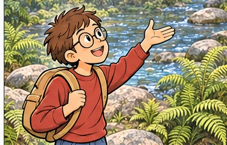
“Climb up!” said Annie.
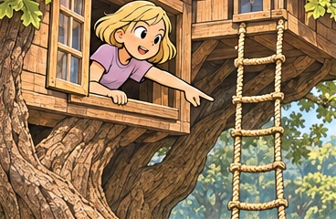
Jack tried to stand. His legs were .
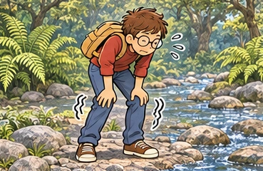
He felt a bit .
“Hurry!” shouted Annie. “He’s coming!”
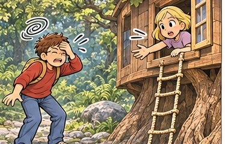
Jack looked around. The Tyrannosaurus was heading straight toward him!
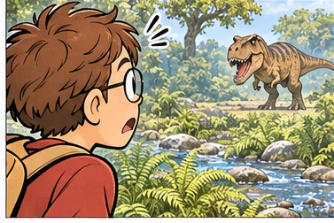
Jack to the ladder. He grabbed the sides and started up.
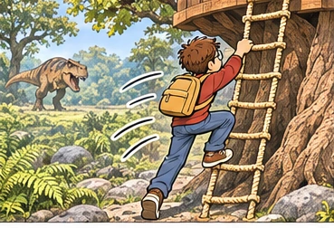
“Hurry! Hurry!” screamed Annie.
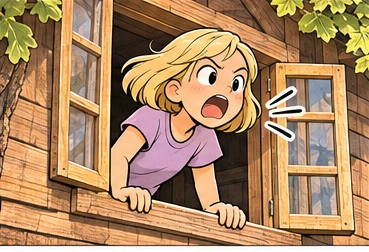
Jack into the tree house.
“He’s coming toward the tree!” Annie cried.
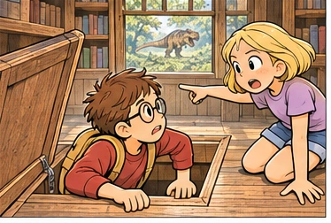
Suddenly something slammed against the oak tree. The tree house shook like a leaf.
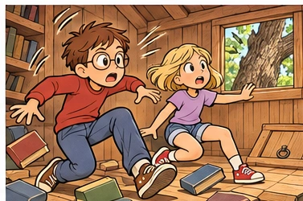
Jack and Annie tumbled into the books.
“Make a wish!” cried Annie.
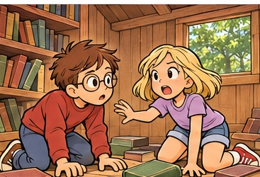
“We need the book! The one with the picture of Frog Creek!” said Jack. “Where is it?”
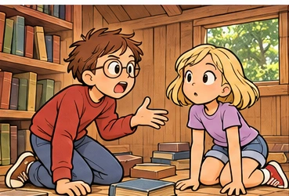
He pushed some books aside. He had to find that book about Pennsylvania.
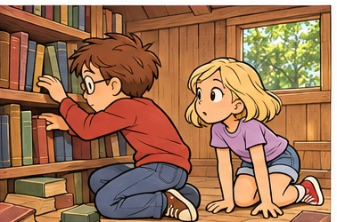
There it was!
He grabbed it and tore through it, looking for the photograph of the Frog Creek woods.
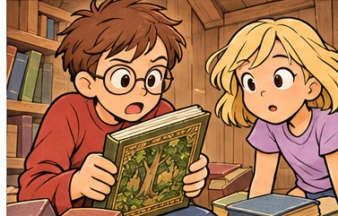
He found it! Jack pointed to the picture.
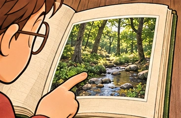
“I wish we could go home!” he shouted.
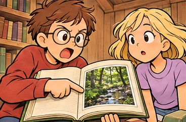
The wind began to moan. Softly at first.
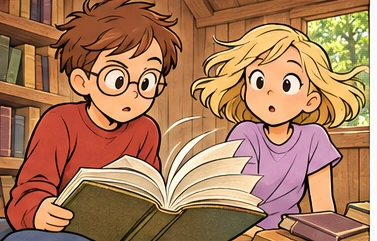
“Hurry!” Jack yelled.
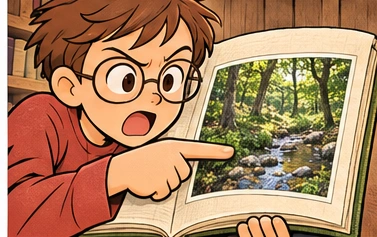
The wind picked up. It was whistling now.
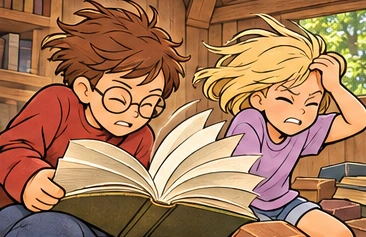
The tree house started to spin.
It spun faster and faster.
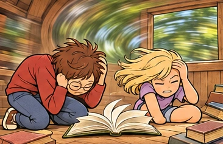
Jack closed his eyes. He held on tightly to Annie.
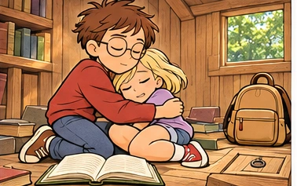
Then everything was still.
Absolutely still.
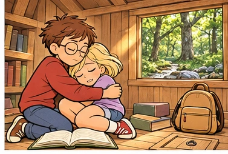